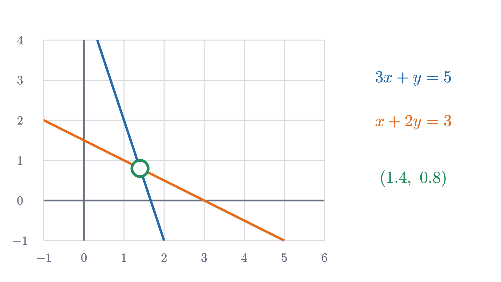
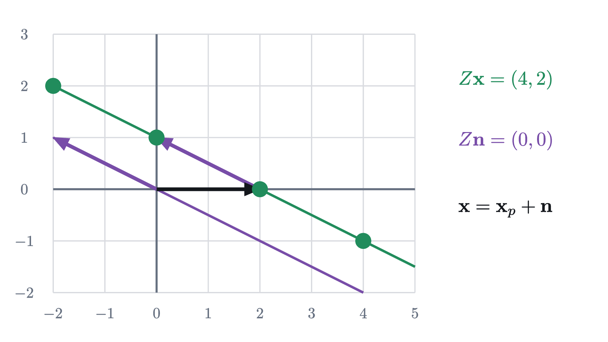

Solving Ax = b by undoing a transformation
A linear system asks which vector a matrix sends to b. That view explains when there is one solution, none or a whole line, and what the inverse matrix does.
AssumesA matrix is a transformation of spaceThe determinant is how much area gets scaledSolving two equations at once: where lines meet
Here is a pair of equations of the kind you have solved many times:
Elimination gives $x = 1.4$, $y = 0.8$, and that would be the end of it, except for a nagging fact about such systems. Most of them have exactly one solution, and now and then one turns up with no solution or with infinitely many. The method does not warn you. It just breaks down partway, with an equation like $0 = 4$ or $0 = 0$. What decides which kind of system you are holding?
The answer comes from reading the same two equations as one statement about a transformation. Collect the coefficients into a matrix and the unknowns and right-hand sides into vectors:
A matrix is a transformation of the plane: $A$ sends $(x, y)$ to $(3x + y,\ x + 2y)$, which is $x$ times its first column $(3, 1)$ plus $y$ times its second column $(1, 2)$. So the system says $A\mathbf{x} = \mathbf{b}$, and it asks: which vector does $A$ send to $\mathbf{b}$? In the animation the plane has already been transformed and a dot sits on $\mathbf{b}$. Running the film backwards carries the dot to its starting point, and that starting point is the solution.
Seen this way, the three kinds of system correspond to three things that can happen at the target: one point lands on $\mathbf{b}$, no point does, or many do. I will use two facts about the determinant: $\det\begin{pmatrix} a & b \\ c & d \end{pmatrix} = ad - bc$ is zero exactly when the columns are parallel, and when it is not zero the matrix has an inverse $A^{-1} = \frac{1}{ad - bc}\begin{pmatrix} d & -b \\ -c & a \end{pmatrix}$ with $A^{-1}A = AA^{-1} = I$.
Three readings of one system
It is worth setting the readings side by side, because each makes something different easy to see.
In the row picture, familiar from school algebra, each equation is a line and the solution is the point where the lines cross. The left side of each equation is the dot product of a row of $A$ with $\mathbf{x}$, so each line is perpendicular to its row: the blue line below is perpendicular to $(3, 1)$.

In the column picture, the unknowns are amounts. The system reads
and asks how much of each column to mix in order to reach $\mathbf{b}$.
The transformation picture is the column picture for all vectors at once: $A$ moves every point of the plane, and we want the point that ends up at $\mathbf{b}$.
Pause and try
Using only the column picture, find $\mathbf{x}$ with $A\mathbf{x} = \mathbf{b}$ for (a) $\mathbf{b} = (3, 1)$, (b) $\mathbf{b} = (4, 3)$, (c) $\mathbf{b} = (5, 0)$. (For the last one, think about which column needs to be cancelled.)
Show answerHide answer
(a) $(3, 1)$ is the first column itself: $\mathbf{x} = (1, 0)$. (b) $(4, 3) = (3, 1) + (1, 2)$, one of each: $\mathbf{x} = (1, 1)$. (c) We need $y$ to cancel the height: $x + 2y = 0$ means $x = -2y$, and then $3x + y = -5y = 5$ gives $y = -1$, $x = 2$. Check: $2\,(3, 1) - (1, 2) = (5, 0)$.
When the film can be run backwards
If $A$ has an inverse, the matrix $A^{-1}$ is the film run backwards: it sends every output of $A$ to the input it came from. Then the system is solved by applying $A^{-1}$ to the target.
The two halves of the proof use the two halves of the definition of an inverse. $AA^{-1} = I$ gives existence, and $A^{-1}A = I$ gives uniqueness.
When the plane is squashed
Now take a matrix whose determinant is zero:
Its columns $(2, 1)$ and $(4, 2)$ are parallel, so every output $x\,(2, 1) + y\,(4, 2) = (x + 2y)\,(2, 1)$ lies on the line through the origin along $(2, 1)$. The whole plane is squashed onto that line. Two consequences are visible before any algebra. A target off the line is never hit. And a target on the line is hit by many points at once, because a plane’s worth of inputs has been packed into a line’s worth of outputs.
Pause and try
Find all solutions of $Z\mathbf{x} = (4, 2)$, and all solutions of $Z\mathbf{x} = (0, 0)$. How are the two sets related? Then try $Z\mathbf{x} = (4, 3)$.
Show answerHide answer
$Z(x, y) = (2x + 4y,\ x + 2y)$. For the target $(4, 2)$ both equations say $x + 2y = 2$, so the solutions form a line: $(2, 0)$, $(0, 1)$, $(4, -1)$ and so on. For the target $(0, 0)$ both say $x + 2y = 0$: the parallel line through the origin, containing $(0, 0)$, $(2, -1)$, $(-2, 1)$. The first line is the second one shifted by $(2, 0)$. For $(4, 3)$ the equations say $x + 2y = 2$ and $x + 2y = 3$, which cannot both hold: no solutions.
The line of inputs that $Z$ sends to the origin deserves a name, because it controls everything else.
The kernel always contains $\mathbf{0}$. For an invertible matrix it contains nothing else, by the uniqueness theorem with $\mathbf{b} = \mathbf{0}$. For $Z$ the kernel is the line $x + 2y = 0$, and the image is the line along $(2, 1)$. We have met kernels before under another name: the eigenvectors of a matrix $A$ for an eigenvalue $\lambda$ are the nonzero vectors in the kernel of $A - \lambda I$.
Part 3 used nothing but linearity, so it holds for matrices of any size: the solutions of $A\mathbf{x} = \mathbf{b}$, if there are any, are one particular solution plus the kernel. The zero matrix, left out of the theorem, sends everything to $\mathbf{0}$: its kernel is the whole plane, and $A\mathbf{x} = \mathbf{b}$ is solved by every $\mathbf{x}$ if $\mathbf{b} = \mathbf{0}$ and by none otherwise.

So the determinant of the coefficient matrix is the number that decides what kind of system you are holding, and it does so without looking at the right-hand side. The right-hand side only matters in the squashed case, where it decides between “none” and “a line”.
Row reduction, the practical method
Knowing that a solution exists is different from finding it. For two unknowns the inverse formula is quick, but for larger systems the method everyone uses, by hand and by computer, is the organized form of elimination called row reduction or Gaussian elimination. We keep only the numbers, in an array with the right-hand side after a bar (the augmented matrix), and allow three operations on its rows:
- swap two rows;
- multiply a row by a nonzero number;
- add a multiple of one row to another row.
None of these changes the set of solutions. A vector that satisfies both old equations satisfies both new ones, since the new ones are combinations of the old. And each operation can be undone by an operation of the same kind (swap back, multiply by the reciprocal, subtract the same multiple), so by the same argument a vector that satisfies the new equations satisfies the old ones.
The aim is to reach rows that say $x = \dots$ and $y = \dots$ outright. Watch what the operations do to the two lines of the row picture.
Written out as arrays, the whole computation is
The left block has become the identity matrix, and the column after the bar is the solution. Because the solution set never changed, every line in the figure passes through the same crossing point at every stage.
Row reduction also detects the squashed case by itself. Try it on $Z\mathbf{x} = (4, 3)$:
The last row says $0x + 0y = 1$, which nothing satisfies. With the target $(4, 2)$ the last row would be $0\ 0\ |\ 0$, which says nothing, and the surviving row $x + 2y = 2$ describes the line of solutions. A row of zeros on the left of the bar is how $\det = 0$ shows up during elimination.
The inverse matrix by row reduction
The inverse can be found by the same process. Its first column is $A^{-1}(1, 0)$, the vector that $A$ sends to $(1, 0)$, and its second column is the vector that $A$ sends to $(0, 1)$. So the columns of $A^{-1}$ are the solutions of two systems with the same left side, and we can reduce both at once by putting both right-hand sides after the bar.
Once $A^{-1}$ is known, every system with this coefficient matrix is solved by one multiplication, and the answer depends linearly on the target: doubling $\mathbf{b}$ doubles $\mathbf{x}$, and the solution for a sum of targets is the sum of the solutions.
Pause and try
Use $A^{-1}$ from the example to solve $3x + y = 10$, $x + 2y = 5$. Then, without further calculation, write down the solution of $3x + y = 15$, $x + 2y = 8$, using the fact that $(15, 8) = (10, 5) + (5, 3)$.
Show answerHide answer
$\mathbf{x} = A^{-1}(10, 5) = (4 - 1,\ -2 + 3) = (3, 1)$. Check: $9 + 1 = 10$ and $3 + 2 = 5$. For the second system, the solution is the sum of the solutions for $(10, 5)$ and for $(5, 3)$: $(3, 1) + (1.4, 0.8) = (4.4, 1.8)$. Check: $13.2 + 1.8 = 15$ and $4.4 + 3.6 = 8$.
Two mistakes to avoid
What was hard here was that “solve the system” sounds like a single task, while it hides two different questions: does anything land on $\mathbf{b}$, and how many things do? The transformation picture separates them. The image answers the first question and the kernel answers the second, and for a square matrix the determinant settles both at once. The reusable idea is the shape of the answer, one particular solution plus the kernel, which describes the solutions of every linear equation you will meet, including differential equations.
Check yourself
A $2 \times 2$ system $A\mathbf{x} = \mathbf{b}$ is known to have the two solutions $(1, 2)$ and $(3, 3)$. Which statement must be true?
Problems
The first three are computations, the next three combine the theorems, and the last two ask for arguments.
Problem 1
Solve $2x + y = 7$, $x + 3y = 11$ by row reduction. Then state the solution as a sentence about the columns of the coefficient matrix.
Show solutionHide solution
$\left[\begin{array}{cc|c} 2 & 1 & 7 \\ 1 & 3 & 11 \end{array}\right] \to \left[\begin{array}{cc|c} 1 & 3 & 11 \\ 2 & 1 & 7 \end{array}\right] \to \left[\begin{array}{cc|c} 1 & 3 & 11 \\ 0 & -5 & -15 \end{array}\right] \to \left[\begin{array}{cc|c} 1 & 3 & 11 \\ 0 & 1 & 3 \end{array}\right] \to \left[\begin{array}{cc|c} 1 & 0 & 2 \\ 0 & 1 & 3 \end{array}\right]$, using a swap, $R_2 - 2R_1$, $R_2 \div (-5)$ and $R_1 - 3R_2$. So $x = 2$, $y = 3$. Check: $4 + 3 = 7$ and $2 + 9 = 11$. Column sentence: twice the column $(2, 1)$ plus three times the column $(1, 3)$ equals $(7, 11)$.
Problem 2
Let $M = \begin{pmatrix} 4 & 3 \\ 1 & 1 \end{pmatrix}$. Find $M^{-1}$ and use it to solve $M\mathbf{x} = (10, 3)$ and $M\mathbf{x} = (1, 0)$.
Show solutionHide solution
$\det M = 4 - 3 = 1$, so $M^{-1} = \begin{pmatrix} 1 & -3 \\ -1 & 4 \end{pmatrix}$. Then $M^{-1}(10, 3) = (10 - 9,\ -10 + 12) = (1, 2)$; check: $4 + 6 = 10$, $1 + 2 = 3$. And $M^{-1}(1, 0) = (1, -1)$, the first column of $M^{-1}$; check: $4 - 3 = 1$, $1 - 1 = 0$.
Problem 3
Let $W = \begin{pmatrix} 1 & -2 \\ -3 & 6 \end{pmatrix}$. (a) Find its kernel and its image. (b) Solve $W\mathbf{x} = (2, -6)$. (c) Solve $W\mathbf{x} = (1, 1)$.
Show solutionHide solution
$\det W = 6 - 6 = 0$. (a) Kernel: $x - 2y = 0$ (the second row, $-3x + 6y = 0$, says the same), so the kernel is the line of multiples of $(2, 1)$. Image: the columns $(1, -3)$ and $(-2, 6) = -2\,(1, -3)$ are parallel, so the image is the line of multiples of $(1, -3)$. (b) $(2, -6) = 2\,(1, -3)$ is in the image. One solution is $\mathbf{x}_p = (2, 0)$, since $W(2, 0) = (2, -6)$. All solutions: $(2, 0) + t\,(2, 1)$ for any number $t$, which is the line $x - 2y = 2$. (c) $(1, 1)$ is not a multiple of $(1, -3)$, so there is no solution. By row reduction: adding 3 times row 1 to row 2 in $\left[\begin{array}{cc|c} 1 & -2 & 1 \\ -3 & 6 & 1 \end{array}\right]$ gives the row $0\ 0\ |\ 4$.
Problem 4
Consider the system $x + 2y = 3$, $2x + ky = c$. (a) For which $k$ is there a unique solution whatever $c$ is? (b) For the remaining value of $k$, for which $c$ are there solutions, and what are they?
Show solutionHide solution
The coefficient matrix $\begin{pmatrix} 1 & 2 \\ 2 & k \end{pmatrix}$ has determinant $k - 4$. (a) For $k \neq 4$ the determinant is not zero and the solution is unique for every $c$. (b) For $k = 4$ the second equation is $2x + 4y = c$, while twice the first is $2x + 4y = 6$. If $c = 6$ the two equations agree and the solutions are the line $x + 2y = 3$: $(3, 0) + t\,(-2, 1)$. If $c \neq 6$ they contradict each other and there is no solution. In the language of the lesson: the image is the line along $(1, 2)$, and $(3, c)$ lies on it only when $c = 6$.
Problem 5
Find the inverse of $\begin{pmatrix} 1 & 2 \\ 3 & 4 \end{pmatrix}$ by row reduction, and check it against the formula.
Show solutionHide solution
$\left[\begin{array}{cc|cc} 1 & 2 & 1 & 0 \\ 3 & 4 & 0 & 1 \end{array}\right] \to \left[\begin{array}{cc|cc} 1 & 2 & 1 & 0 \\ 0 & -2 & -3 & 1 \end{array}\right] \to \left[\begin{array}{cc|cc} 1 & 2 & 1 & 0 \\ 0 & 1 & 1.5 & -0.5 \end{array}\right] \to \left[\begin{array}{cc|cc} 1 & 0 & -2 & 1 \\ 0 & 1 & 1.5 & -0.5 \end{array}\right]$, using $R_2 - 3R_1$, $R_2 \div (-2)$, $R_1 - 2R_2$. So the inverse is $\begin{pmatrix} -2 & 1 \\ 1.5 & -0.5 \end{pmatrix}$. Formula: the determinant is $4 - 6 = -2$, and $\frac{1}{-2}\begin{pmatrix} 4 & -2 \\ -3 & 1 \end{pmatrix}$ is the same matrix.
Problem 6
You are told that $A\,(0.4, -0.2) = (1, 0)$ and $A\,(-0.2, 0.6) = (0, 1)$ for a certain matrix $A$, and nothing else about it. Solve $A\mathbf{x} = (5, 3)$, and explain which property of matrices you used.
Show solutionHide solution
Since $(5, 3) = 5\,(1, 0) + 3\,(0, 1)$, try $\mathbf{x} = 5\,(0.4, -0.2) + 3\,(-0.2, 0.6) = (2 - 0.6,\ -1 + 1.8) = (1.4, 0.8)$. By linearity, $A\mathbf{x} = 5\,A(0.4, -0.2) + 3\,A(-0.2, 0.6) = 5\,(1, 0) + 3\,(0, 1) = (5, 3)$. It is the only solution. The two given facts say $AX = I$ for the matrix $X$ with columns $(0.4, -0.2)$ and $(-0.2, 0.6)$, so $\det A \cdot \det X = 1$ by the product rule for determinants, $\det A \neq 0$, and the uniqueness theorem applies. This is why the two given vectors are the columns of $A^{-1}$: the solution for any target is the corresponding mix of the solutions for $(1, 0)$ and $(0, 1)$.
Problem 7
Prove: if a $2 \times 2$ system $A\mathbf{x} = \mathbf{b}$ has two different solutions, then it has infinitely many, and $\det A = 0$.
Show solutionHide solution
Let $\mathbf{x}_1 \neq \mathbf{x}_2$ be solutions and put $\mathbf{n} = \mathbf{x}_1 - \mathbf{x}_2 \neq \mathbf{0}$. Then $A\mathbf{n} = A\mathbf{x}_1 - A\mathbf{x}_2 = \mathbf{b} - \mathbf{b} = \mathbf{0}$. For every number $t$, $A(\mathbf{x}_1 + t\mathbf{n}) = \mathbf{b} + t\,\mathbf{0} = \mathbf{b}$, and these vectors are all different because $\mathbf{n} \neq \mathbf{0}$: infinitely many solutions. If $\det A$ were not zero, the uniqueness theorem would allow only one solution. So $\det A = 0$.
Problem 8
(Cramer’s rule.) Let $A = \begin{pmatrix} a & b \\ c & d \end{pmatrix}$ with $\det A \neq 0$, and let the target be $(e, f)$. Prove that the solution of $A\mathbf{x} = (e, f)$ is
and describe each numerator as a determinant. Verify the rule on the opening system.
Show solutionHide solution
By the uniqueness theorem the solution is $A^{-1}(e, f) = \frac{1}{ad - bc}\begin{pmatrix} d & -b \\ -c & a \end{pmatrix}\begin{pmatrix} e \\ f \end{pmatrix} = \frac{1}{ad - bc}\,(de - bf,\ -ce + af)$, which is the claim. The numerator of $x$ is $\det\begin{pmatrix} e & b \\ f & d \end{pmatrix}$, the determinant of $A$ with its first column replaced by the target, and the numerator of $y$ is $\det\begin{pmatrix} a & e \\ c & f \end{pmatrix}$, with the second column replaced. For $3x + y = 5$, $x + 2y = 3$: $x = \frac{5 \cdot 2 - 1 \cdot 3}{5} = \frac75 = 1.4$ and $y = \frac{3 \cdot 3 - 5 \cdot 1}{5} = \frac45 = 0.8$.